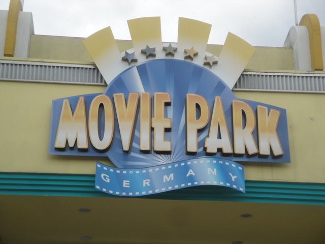
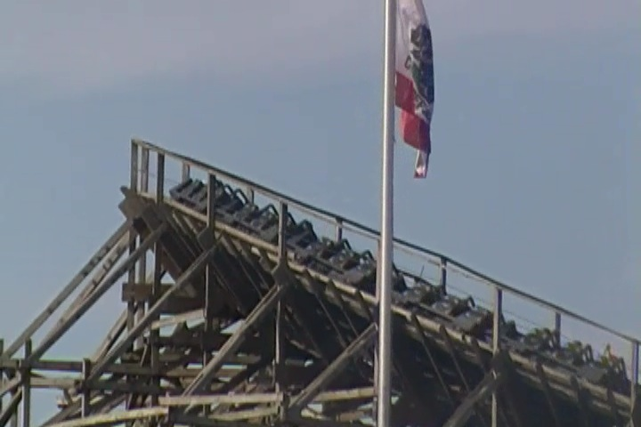
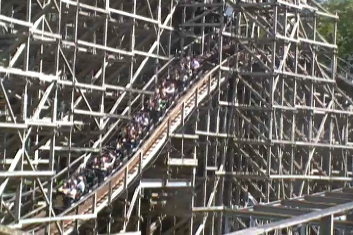
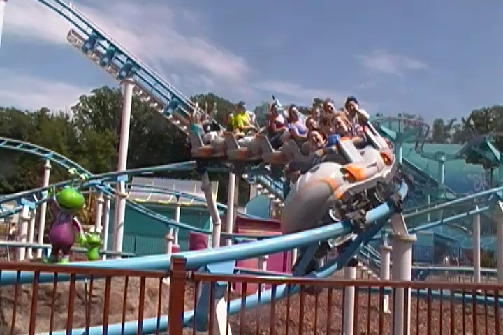
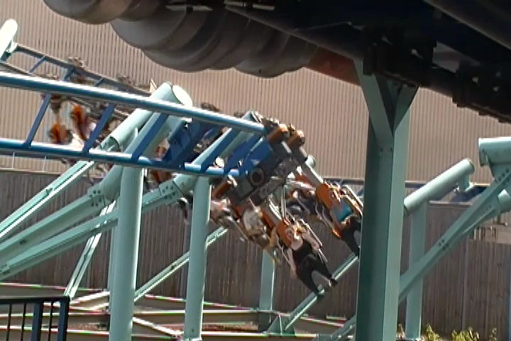
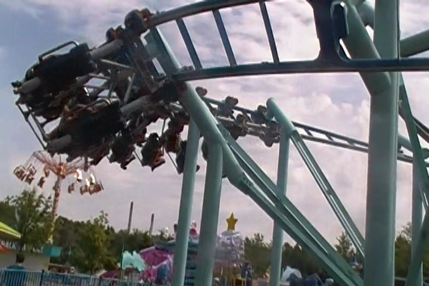
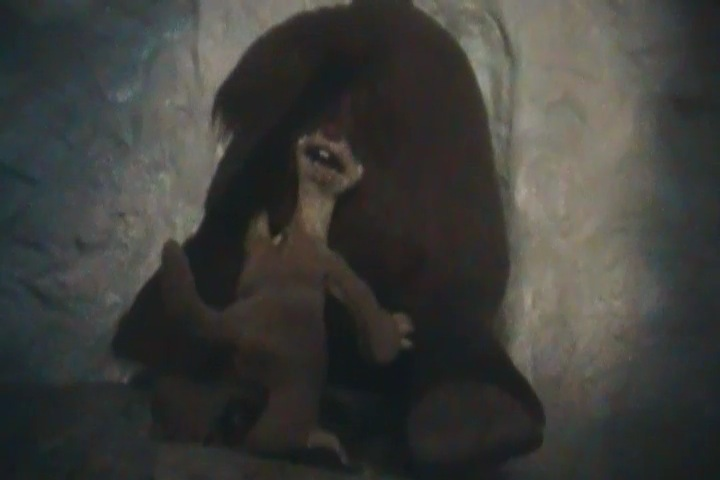
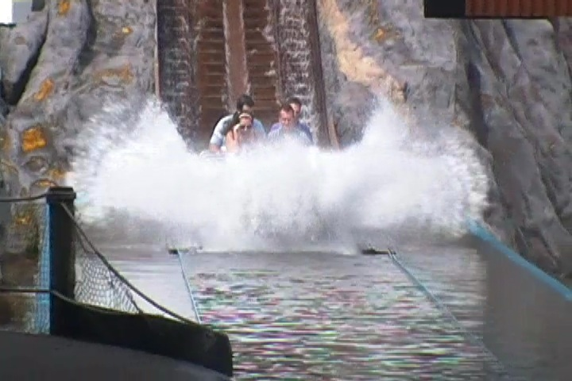
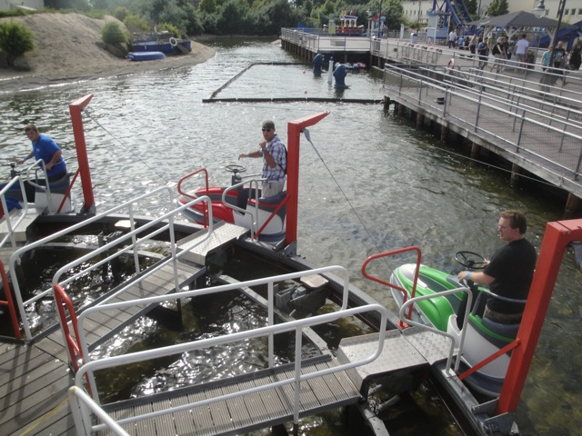
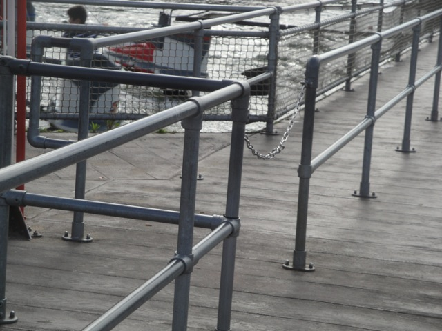

TPR's Mega Europe Trip
Rome Rome Credit Whoring Rainbow Magicland Fiabilandia Mirabilandia
Movieland Studios Gardaland Walygator Parc Holiday Park Europa Park
Fort Fun Heide Park
Schlossbeck
Movie Park Germany
Phantasialand
Parc Asterix Disneyland Paris

After the insanity of Schlossbeck, we went for a 2 minute drive and were off to Movie Park Germany.
 First off, lets get some freaking lunch!!! I'm starving!!!!
First off, lets get some freaking lunch!!! I'm starving!!!!
Oh joy. Our first credit here is an SLC.
 To be fair, it wasn't nearly as bad as I was expecting.
To be fair, it wasn't nearly as bad as I was expecting.
"Whats that? The SLC isn't painful enough? Well, then let me kind enough to show you the way to our next ride." *evil laugh*

If MP-Xpress didn't hurt you, allow Bandit, this hunk of sh*t to do the job for you.

This ride shuffles like hell, tries to grate your ass like cheese, and continously smashes the back of your head into a hard plastic unpadded headrest violently throughout the entire ride.
 It seriously ranks up there as one of the Worst Coasters I've ever ridden.
It seriously ranks up there as one of the Worst Coasters I've ever ridden.
What? No sex allowed on the ride!!!? *Ugh* How dare Movie Park Germany!!!
All right. Time to check out the parks Nickelodeon Area and get all the kiddy credits there.
 All right, lets get started with the Vekoma Roller Skater.
All right, lets get started with the Vekoma Roller Skater.

After Bandit, this felt like one of the best rides ever.
Hey, its a Roller Skater. And like all roller skaters, is fun.
 Up next was the Wild Mouse, Ghost Chasers.
Up next was the Wild Mouse, Ghost Chasers.
 Now I know that a Wild Mouse is not a kiddy coaster, but its still in the kids area, which makes this kids area pretty damn cool.
Now I know that a Wild Mouse is not a kiddy coaster, but its still in the kids area, which makes this kids area pretty damn cool.
Dude, this thing was completely trimless. I actually got some good airtime on the main drop.
Anyone interested in the Dora the Explorer Log Flume?
You see this wristband, this is the parks All you can Eat Pass, or as I like to call it, the Gluttony Pass, which allowed us to get as much food as we wanted. And it rocks!!! I wasn't even hungry for this burger or milkshake!!! =)

Yep, now we're gonna ride the Inverted Roller Skater as well.
"Ugh. Sick of all these god damn Vekomas."

Dude, this thing was awesome. Smooth, fun, overall very good ride. =)
We just had to check out their Ice Age Dark Ride. I mean just look at it!!! Look at how high quality these animatronics are!!!

"Ooh!!! Your ass is so tender!!!" =)
All right. After the ice, there comes this funky surprise drop...
And boom!!! Just like that!!! Tropical Paradise!!!!
Their rapids ride was on crack!!! The ride is themed to fairies, it has no drops, but the entire river flows at like 20 mph and it feels like it'll soak you at any possible moment!!!
And yeah. We had to check out their more well known water ride. Alien Encounter.

It was a fun ride and all, but the water is just disgusting. Quick story, we were getting in the boats for Alien Encounter, and the water, which was black and had some dirty filthy sh*t mixed in was getting in our shoes. So they had to clean out the boat. But when they were done, they just dumped it all back into the flume. We were just staring with our jaws dropped when the employee said "Yes. Its a lot of water. 75 liters", completely unaware that it wasn't the size that amazed us, but rather the fact that they just poured 75 liters of black chunky dirty sh*tty water back into the flume!!! I know this summer, we closed Roaring Rapids for two days to completely replace all our water because it was simply too dirty. I really hope Movie Park Germany took similar action with Alien Encounter after I left.
Oops. Looks like went through a wormhole back home.

Hey, this water whip ride was a lot of fun!!! I really hope to see these pop up in more parks.
"No!!!! Don't eat me!!!! I'm not included on the All you Can Eat Pass!!!!!"
This may sound weird to say, but this is by far the worst Disk-O I've ever ridden.
I know its weird how a Disk-O can be horrible. I mean its just a Disk-O. Well this Disk-O is rough as hell, vibrates a ton, gives you an unpleasent ass massage, and felt like there were bumps and jolts in it.

If theres one thing about the park that pissed me off, it had the La Ronde rule of closing all the lines before the park closed. Seriously guys. Not cool. It sucks at La Ronde and it sucks here. Stop it. Right now. >=(
Well everything else is closed. You wanna check it out?
Well, we still had an hour till our ERT and all the rides were closed. So we just hung out in the cafe and took good advantage of our Gluttony Pass.
 All right. Our ERT started out with us getting on their newest coaster, Van Helsing's Factory.
All right. Our ERT started out with us getting on their newest coaster, Van Helsing's Factory.
Ooh. Nice theming in the line.
Not impressed with this. Now to be fair, this was the line in the afternoon when we rode it for the first time (Hey, it could've gone Expedition Ge Force on us!!!). And for our ERT, this was all cleaned up, but it certainly didn't leave a good impression on me. Now, maybe its not the parks fault at all and the stupid kids just ruined the line after they cleaned it. After witnessing the kids today, I totally could see that.
The ride was ok. There wasn't too much to it. I know it has some REALLY strong laterals. Strong to the point that some people thought they were too strong. I personally loved them, but more importantly, I felt that the ride was too short. It ended just as it was starting to warm up. Oh, and this'll scare you in the exit.
We also had ERT on High Fall. Which is indeed an Acrophobia Clone.
 THIS THING IS F*CKING INSANE!!!!!!
THIS THING IS F*CKING INSANE!!!!!!
 Yeah. This thing is insane. You won't even give a damn about your balls. Its that good.
Yeah. This thing is insane. You won't even give a damn about your balls. Its that good.
Phantasialand
Home